The SRD v3.5 rule set allows you to add homebrew choices to most of its selections: companions, weapons, races, and so on. The entry dialog for each type of choice includes fields for all the information particular to that type. For most choices, the values to enter into the dialog can be determined by comparing them to similar choices from the core rule books.
The input fields used to enter homebrew choices are similar to those used by the Quilvyn editor—text fields, selection menus, checkboxes, etc. One difference between the two is that you can enter multiple values into most text boxes in the homebrew choices editor. For example, when entering a homebrew deity, you will likely want to enter multiple values in the Domains text box. To do this, separate the individual values by commas: Good,Law,War. If you ever need to enter a single value that contains a comma into a text box, enclose the value in quotes: "May create and mend magic weapons, armor, and shields".
Although the widest text boxes that Quilvyn uses show around 40 characters, you can enter longer text values. Only 40 characters will show at once, but you can use your arrow keys to move the cursor within the full text. Several examples below show only the beginning portion of longer values entered into text boxes.
Animal Companions and Familiars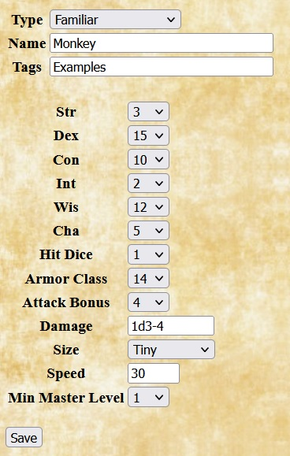 |
When adding an animal companion or familiar, Quilvyn displays fields for entering the creature's basic attributes, hit dice, armor class, attack bonus, damage, size, speed, and minimum master level. Quilvyn expects the damage value to indicate the number and type of damage dice, optionally followed by a bonus or penalty. For example, an Owlbear animal companion would have a damage attribute of 1d6+5,1d6+5,1d8+2 (two claws and a bite), while a Donkey's damage would be 1d2. When entering armor class, attack bonus, and damage, include any bonus or penalty from attributes such as dexterity, natural armor, and strength. Minimum master level is used for alternative animal companions that require the character to be of higher level before they can be selected. The example shown is taken from the statistics for the monkey from the Monster Manual. Note that the monkey receives +2 size and +2 dexterity bonuses to armor class, resulting in an overall AC of 14, and that the monkey's low strength gives a -4 penalty to damage. |
Armors and Shields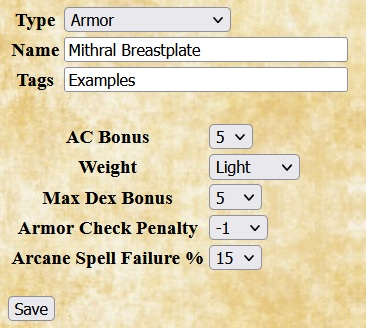 |
For homebrew armors and shields, Quilvyn displays fields for entering the boost to armor class gained by using the armor or shield, the weight category, the maximum dexterity armor class bonus allowed, the penalty applied to skills such as Escape Artist, and the percentage chance of failure when casting arcane spells. The example shown gives the values for a breastplate made from mithral, as discussed in the Special Materials section of the SRD. Making armor or a shield from mithral reduces its weight by 1 category, spell failure chances by 10%, and armor check penalty by 3, while increasing the maximum dexterity bonus by 2. |
Base, Prestige, and NPC Classes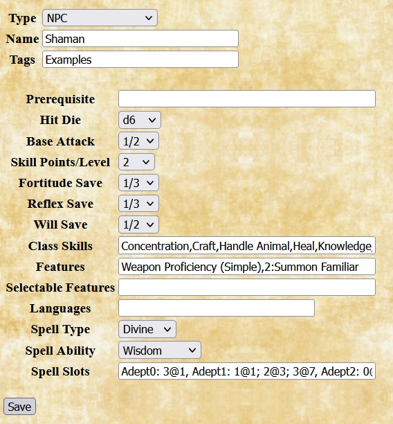 |
When adding a homebrew base class, prestige class, or NPC class, Quilvyn displays fields that allow you to specify optional class prerequisites, the class hit dice, base attack and save progressions, skill points per level, class skills and features, any automatic languages known by characters with the class (e.g, druidic for druids), and information about class spellcasting. The base attack entry gives a choice of 1/2 (increases by 1 every 2 levels, as with the wizard class), 3/4 (increases by 3 every 4 levels, as with clerics), or 1 (increases by 1 every level, as with fighters). Save entries give a choice of 1/3 (sometimes referred to as "poor") or 1/2 ("good"). Features that are acquired after level 1 (for example, the rogue Evasion feature acquired at level 2) should be preceded by the level and a colon (so, 2:Evasion). For classes that cast spells, the spell type, spell ability, and spell slots input fields provide places to enter the type of spells (Arcane or Divine), the basic ability used to calculate spell DCs, and the progression of spell slots available to the caster. Each item in the spell slot text box gives a spell type and level followed by a colon, then by a series of <count>@<level> terms, each of which indicates how many spell slots the class receives at the given level. For example, the spell slot entry for the cleric class would include C2: 1@3; 2@4; 3@6; 4@9; 5@13, indicating that clerics acquire 1 C2 slot at level 3, 2 at level 4, 3 at level 6, 4 at level 9, and 5 at level 13. The example shows the entry for a Shaman NPC class that has the same features as the core rules' Adept NPC class. It has no prerequisites, d6 hit dice, and 2 skill points per level. Its base attack, fortitude save, and reflex save progressions are poor and its will save progression good. Class skills are Concentration, Craft, Handle Animal, Heal, Knowledge, Profession, Spellcraft, and Survival. The only class features are Weapon Proficiency (Simple) and Summon Familiar, with the latter acquired at level 2. The Shaman casts divine spells with wisdom as the relevant ability. A Shaman receives 3 Adept0 spell slots at level 1 (and no additional Adept0 slots thereafter), 1 Adept1 spell slot at level 1, increasing to 2 at level 3 and 3 at level 7, and so on. |
Class and Race Features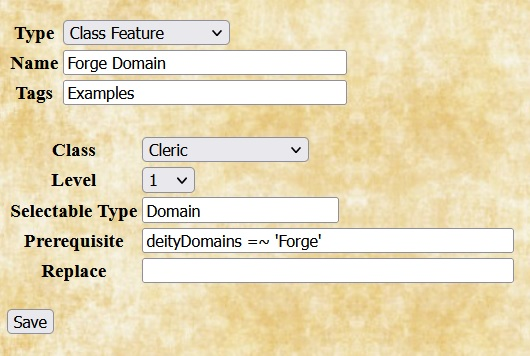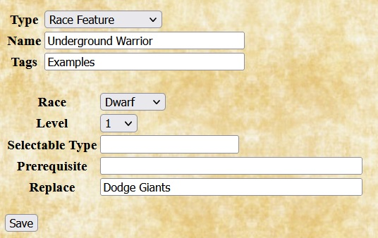 |
Quilvyn allows you to give classes and races new features and to replace predefined features with homebrew ones. For homebrew features, Quilvyn displays entries for the name of the class or race that gains the feature and the level at which the feature is gained. If the feature is gained only if selected by the user (e.g, a Cleric domain), enter the type in the Selectable Type box ("Domain"); otherwise, leave the box empty, indicating that all characters of the given class or race gain the feature. Unlike most text boxes, the Selectable Type field only accepts a single value. The Prerequisite box lists any requirements that must be met to gain the feature, and Replace lists any predefined features that this one replaces. The first example shown adds another choice, Forge Domain, to the domains that can be selected by clerics at level 1. It's a valid choice only for a cleric whose deity has 'Forge' in their list of domains. The second example replaces the predefined Dodge Giants feature for all dwarves with a homebrew feature named Underground Warrior. |
Deities | |
| 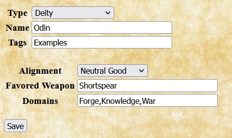 |
When adding a homebrew deity, Quilvyn displays fields to specify the deity's alignment, favored weapon or weapons, and domains. As discussed above, multiple domains entered in the Domains text box should be separated by commas. Similarly, if the deity's favored weapon includes multiple weapons (e.g., all flails), the individual weapons should be listed in the Favored Weapons text box separated by commas. |
Feats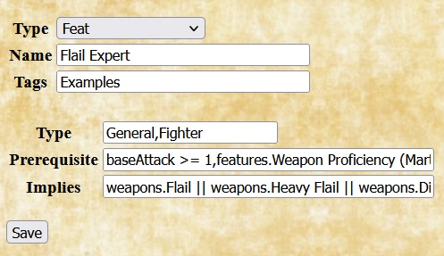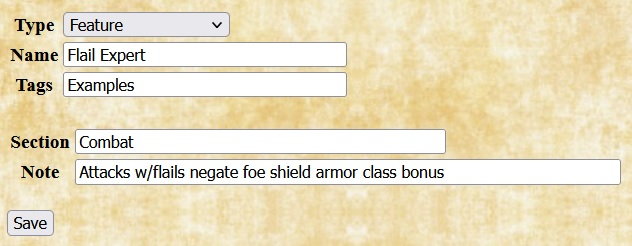 |
For homebrew feats, Quilvyn displays fields to note the feat type and any requirements that must be met to select it. The feat type will typically be one of "General", "Item Creation", or "Metamagic"; you can also include "Fighter" in the feat type box to indicate that this feat can be selected as a fighter bonus feat. Quilvyn allows you to specify two kinds of requirements for a feat. The Prerequisite box lists any requirements that must be met to select the feat; Quilvyn generates a validation error if the feat is selected for a character who does not meet these requirements. The Implies box lists any requirements that, while not strictly required, make the feat useless if not met. For example, although the rules don't require a caster level to select it, the Combat Casting feat from the core rules is likely to be useful only to a spell caster. Quilvyn will generate a validation warning if the Implies requirements are not met. When specified, the Prerequisite and Implies fields will normally contain references to character attributes; see the discussion of using character attributes for how to include these. The effects of a feat are entered separately as a feature. The example shows the entry for a general feat named Flail Expert that can be selected as a fighter bonus feat. The Prerequisite box notes that it requires a baseAttack value of at least 1 and Weapon Proficiency (Martial), and the Implies box notes that the feat is useless unless the character possesses a flail. The example also shows the corresponding feature that describes the effect of selecting the Flail Expert feat. |
Features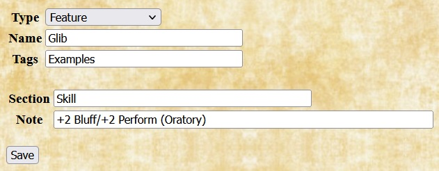 |
In Quilvyn, features describe the effects of feats, class features, and racial features. When adding a homebrew feature, enter the section of the character sheet (one of attributes, combat, companion, feature, magic, save, or skill) where the note for the feature should appear, then enter the note text. You can enter multiple sections and notes, but the number of sections entered must equal the number of notes. Feature notes can both reference and modify character attributes; see the discussion of using character attributes for how to do this. The example shows the entry for a feature named Glib with a note that appears in the skill section of the character sheet. It adds 2 to the skill modifiers of the Bluff and Perform (Oratory) skills. |
Languages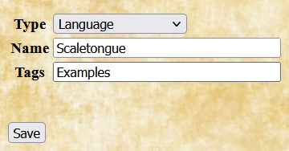 |
Adding a homebrew language requires only specifying the name. Once added, languages can be added to a character by selecting from the language list and can be included in the list of languages automatically known by homebrew races. The example shows the entry for a language called Scaletongue, used in the example for adding a race. |
Races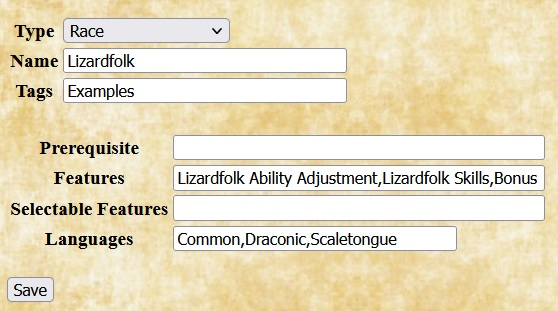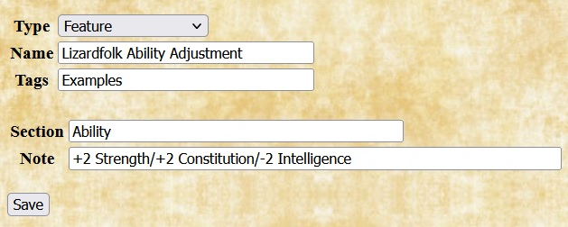 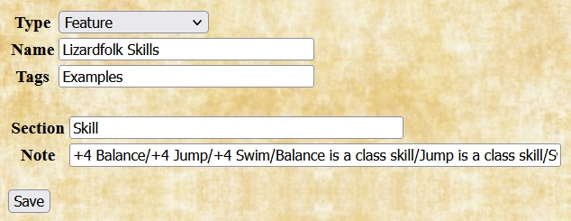 |
When adding a homebrew race, Quilvyn displays fields that allow you to enter prerequisites, features, and languages for the race. Although none of the core races have requirements, Quilvyn provides the Prerequisite entry to allow you to specify a race that has, for example, a minimum strength requirement. Most races will have fixed features, such as an ability adjustment. Quilvyn also allows entering selectable features to support variations such as sub-races. Each feature in these lists will require adding a feature to describe its effects. The Languages field lists the languages that characters of this race know automatically. The example shows the entry for the Lizardfolk character race from the Monster Manual. Features for this race are: Lizardfolk Ability Adjustment; Lizardfolk Skills; Bonus Feat; Scaly Hide; Lizardfolk Weapons; and Hold Breath. (Most of these feature names are created for this example; the MM simply lists the effects.) The corresponding feature entries for the first two of these are shown. Scaletongue is included with the list of automatic languages to illustrate the use of the language shown in the adding a language example. |
Schools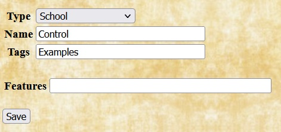 |
Adding a homebrew school of magic typically involves entering only the name, although Quilvyn also allows you to enter features that are acquired by a wizard who specializes in the school. Homebrew schools will normally be paired with homebrew spells that fall within the school. The example shows the entry for a school named Control that grants no features. |
Skills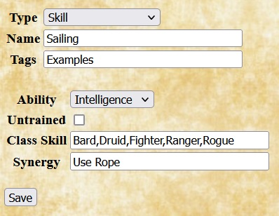 |
When adding a homebrew skill, Quilvyn displays fields for the skill's key ability, whether the skill can be used untrained, the list of classes for which the new skill is a class skill, and any synergies that the skill has with other skills. The example shows the entry for a Sailing skill, which is related to intelligence, requires training to use, and is a class skill for several core classes. It has a synergy with the Use Rope skill, so 5 ranks in Sailing gives a +2 to Use Rope checks. |
Spells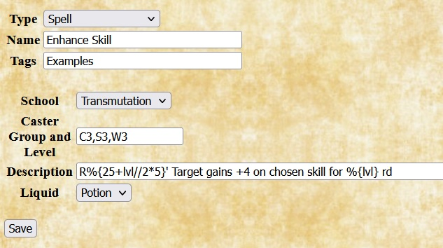 |
When adding a homebrew spell, Quilvyn displays fields that allow you to enter the spell's school, the list of classes and levels for the spell, the description of the spell, and whether or not the spell can be placed into a potion that can be drunk or an oil that can be applied. Spell descriptions can embed references to character attributes; see the discussion of using character attributes for how to include these. Unlike most text boxes, the Description field only accepts a single value; if you enter multiple values, Quilvyn ignores all but the last. The example shows the entry for the transmutation spell Enhance Skill, which is a level 3 spell for clerics, sorcerers, and wizards. It can be invoked using an imbibed potion, and the description notes that the spell can be cast over short range and lasts for a number of rounds equal to the caster level. |
Weapons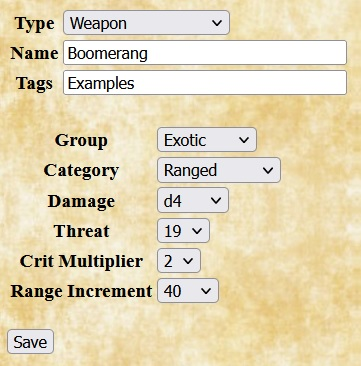 |
When adding a homebrew weapon, Quilvyn displays fields that allow you to enter the weapon's group (Simple, Martial, or Exotic), category (Unarmed, Light, One-Handed, Two-Handed, or Ranged), damage, critical threat range and multiplier, and (for ranged weapons) range increment. The example shows the entry for a boomerang, an exotic ranged weapon with a 40' range increment that inflicts d4 damage, with critical threat and damage of 19-20/x2. |
There are three places that you might want to use references to character attributes when adding homebrew choices: prerequisites for homebrew classes, feats, class and race features, and races; in feature notes that modify character attributes; and embedded in feature notes and spell descriptions. Attribute references appear somewhat differently in each of these contexts.
The examples below develop a homebrew feat named Alert Dodger. Like the monk AC Bonus feature, this feat allows a character to add their (positive) wisdom modifier to their armor class. This will be a general feat that can be taken as a fighter bonus feat, so the initial entry for the feat looks like this:
In the core rulebook, many feats and all prestige classes have prerequisites—attribute values that the character must have to take the feat or a level in the prestige class. Quilvyn allows you to specify similar prerequisites when entering a homebrew class, feat, or race.
Since the effects of the Alert Dodger feat come from battle experience, it makes sense to require a minimum base attack bonus—say, 3—to take the feat. This is represented by adding text to the feat's Prerequisite field:
Quilvyn will generate tests for this requirement and will show a validation error if a character with a base attack bonus of 2 or less is given this feat. You can also specify that the character must have a specific feature as part of your prerequisites. For the Alert Dodger feat, it seems reasonable to require that the character also have the Dodge feature:
Finally, although a high wisdom might not be required to take this feat, it will make little sense to do so unless the character's wisdom is at least 12, giving a positive wisdom modifier. This can be specified by adding text to the Implies field:
Within prerequisites, Quilvyn recognizes the common comparison operators (<, <=, >, >=, ==, !=), and you can use the OR operator (||) to require that at least one of a set of prerequisites is satisfied:
intelligence >= 15 || wisdom >= 15
When making a comparison to a text value rather than a number, surround the value with single or double quotes. Quilvyn also supports the matching operators =~ (matches) and !~ (does not match) with strings. The first of these two prerequisites requires that the character have a Lawful Good alignment, while the second allows any good alignment:
alignment == 'Lawful Good'
alignment =~ 'Good'
(You can think of the =~ and !~ operators as "contains" and "does not contain", but they actually perform a pattern match, treating their second operand as a regular expression. This means that certain characters, such as * and ?, have special meanings if they appear in the second operand. The Mozilla project provides a web page with a detailed description of regular expressions.)
With the Alert Dodger feat definition complete, the next step is to create the corresponding feature, also named Alert Dodger. This will add the description of the feat to the character sheet and allow Quilvyn to create rules to implement its effects. Since the feat affects a character's armor class, its note will fit best in the combat section of the character sheet.
To illustrate how Quilvyn processes feature notes, we'll initially define the Alert Dodger feat to add a fixed +2 to the character's armor class, switching later to adding the wisdom modifier instead.
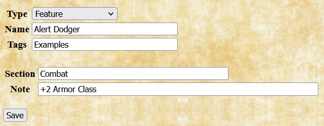Given this definition, Quilvyn will automatically generate a rule that adds two to the character's armor class value, and the note will appear in italics on the character sheet. For readability, character attributes in feature notes must appear as shown above, with initial capital letters and spaces between words.
Single features can modify multiple attributes; in these cases, the note should list the individual modifications separated by slashes. This was shown above in the race definition example, where the note for the Lizardfolk Ability Adjustment read:
+2 Strength/+2 Constitution/-2 Intelligence
Notes in the save and skill sections can modify save bonuses and skill modifiers by referencing the save type or skill name directly; the saves. and skillModifiers. prefixes are not necessary:
+1 Fortitude+2 Ride/+2 Handle Animal
Some feats, many class features, and nearly all spells have effects that vary based on character attributes. For example: the Spell Mastery feat allows a wizard to prepare a number of spells equal to their intelligence modifier without referring to their spellbook; an assassin's Death Attack can inflict paralysis for 1d6 rounds + 1 round per assassin level; and the Acid Splash spell has a range of 25' + 5' per 2 caster levels.
You can embed references to character attributes in the text of feature notes and spell descriptions by enclosing them within the characters %{}. Using this ability, the note for the Spell Mastery feat looks like this:
May prepare %{intelligenceModifier} spells w/out spellbook
When Quilvyn displays this note on the character sheet, it first replaces the reference to the character's intelligenceModifier attribute with its value, so the note might appear on the sheet as
May prepare 2 spells w/out spellbook
We can use this ability to replace the fixed +2 entered earlier for the effects of the Alert Dodger feature with an amount equal to the character's wisdom modifier, giving us its final definition:
Given this note, Quilvyn will automatically generate a rule to add the character's wisdom modifier to their armor class and will display the note in italics.
Beyond simple references, Quilvyn supports performing calculations within embedded references. The note for the assassin's Death Attack feature looks like this:
Sneak attack after 3 rd of study causes death or paralysis for 1d6+%{levels.Assassin} rd (DC %{10 + levels.Assassin + intelligenceModifier} Fort neg)
As this note shows, individual notes and descriptions can contain multiple embedded references, and individual references can use multiple attributes.
Within embedded references, Quilvyn supports the common comparison operators (<, <=, >, >=, ==, !=), the common arithmetic operators (+, -, *, /, unary -), AND (&&), OR (||), matching (=~, !~), and integer division (//). It also supports the ternary if-then-else operator (?:) and the operators <? and >?, which return the smaller and larger of their two operands, respectively. Using these operators, we can define the note for the barbarian Rage feature as follows, which takes into account the fact that the larger constitution bonuses of the Greater Rage and Mighty Rage features extend the duration of the rage:
+4 Str, +4 Con, +2 Will, -2 AC for %{constitutionModifier + 5 + (features.Greater Rage ? 1 : 0) + (features.Mighty Rage ? 1 : 0)} rd %{1 + levels.Barbarian // 4}/dy
Within spell descriptions, in addition to common character attributes, Quilvyn makes available the special character attribute lvl. This variable refers to the caster level appropriate to the specific spell: casterLevels.Cleric for the C1 spell Bane, casterLevels.Bard for the B0 spell Dancing Lights, casterLevels.Sorcerer for the S2 spell Arcane Lock, and so on. Using the lvl attribute allows you to incorporate the caster level into a spell description that works for multiple classes. The description of the Enhance Skill spell example from adding a spell reads:
R%{25+lvl//2*5}' Target gains +4 on chosen skill for %{lvl} rd
When showing this description on the character sheet, Quilvyn will replace the references to lvl with the character's cleric, sorcerer, or wizard level, as appropriate. For example, the description for the S3 Enhance Skill spell for a level 7 sorcerer will read:
R40' Target gains +4 on chosen skill for 7 rd
| Basic attributes | Identity | Combat | Magic | Skills and features |
|---|---|---|---|---|
|
|
|
|
|